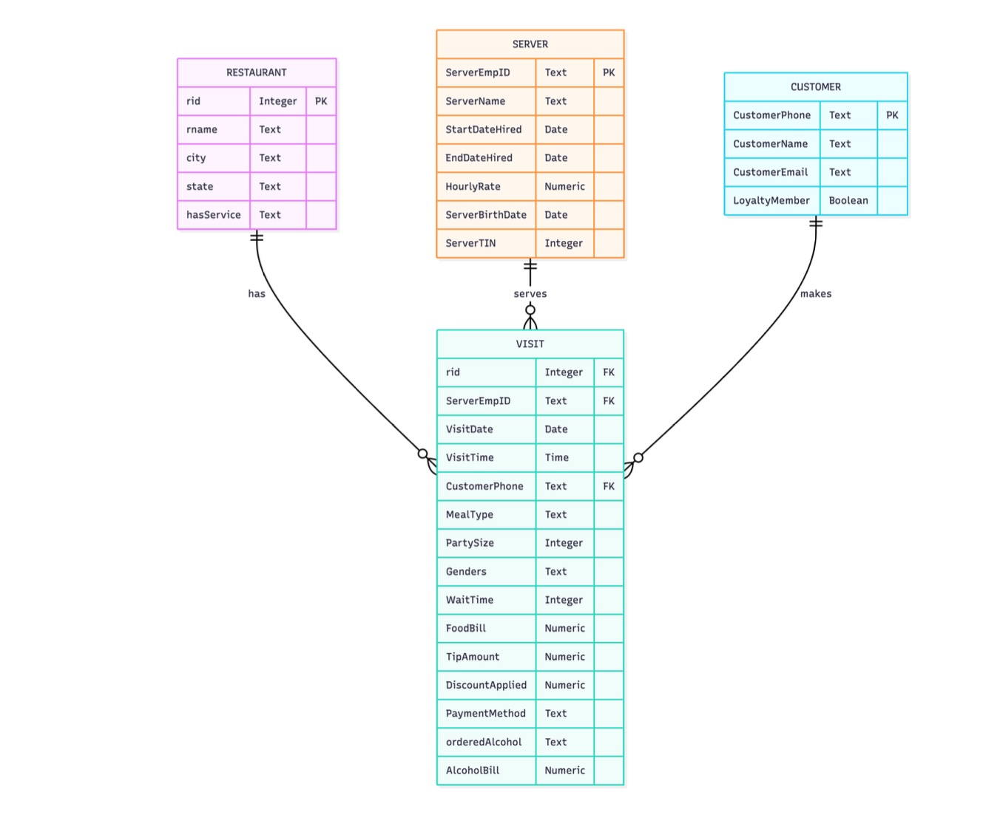

Data Modeling & ETL

A data-focused project centered on designing relational schemas and building an ETL pipeline to transform raw datasets into a structured database.
A data-focused project centered on designing relational schemas and building an ETL pipeline to transform raw datasets into a structured database.
A continuation of the data systems project focused on querying, analyzing, and extracting insights from structured relational data.